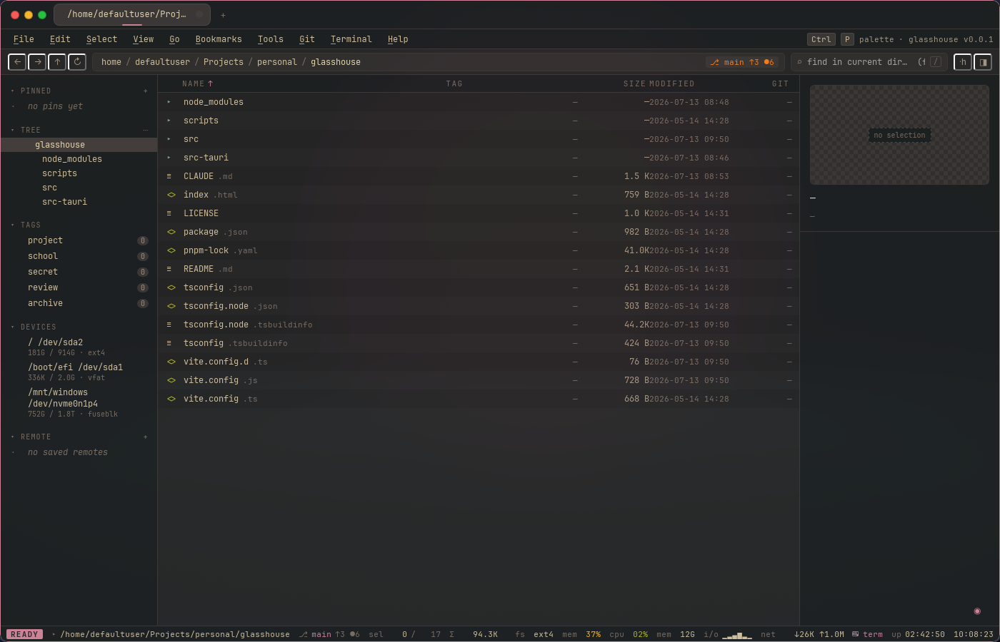

a riced-out file manager for Windows and Linux —
tabs, embedded terminal, git-aware everything

running on Linux (Hyprland) — same binary layout as the Windows build
Tabs with independent history, plus private tabs that stay out of your recents.
An xterm.js drawer with multiple concurrent shells — bash/zsh/fish, WSL distros, and saved ssh remotes — each pinned to where you're browsing.
Repos detected via libgit2: branch and dirty state in the breadcrumb, per-file status column, stage/commit/blame from the menu.
Create and extract .zip, .tar.gz, .tar.zst and .7z without leaving the pane.
Color tags with sidebar filters, pinned folders, and a recents list that follows you.
Dialogs, context menus, prompts and toasts all drawn by the app — no native chrome breaking the rice. Multiple themes, exportable as a .ricerc.
Command palette (Ctrl+P), fuzzy find-in-files, vim-adjacent pane navigation, and every menu shortcut actually bound.
Tauri 2 — a single ~16 MB binary wrapping a Rust backend; no Electron, no bundled Chromium.
# prerequisites: Rust, Node 20+, pnpm # linux: webkit2gtk-4.1 (arch) / libwebkit2gtk-4.1-dev libgtk-3-dev (debian) # windows: WebView2 + VS Build Tools (tauri prerequisites) $ git clone https://github.com/Johnson-Anthony/glasshouse $ cd glasshouse $ pnpm install $ pnpm tauri:dev # dev mode $ pnpm tauri:build # release bundle
Pre-built releases are planned once the first tagged version lands.
React 18 + TypeScript + Vite, xterm.js for the terminal, zero component libraries — the chrome is all hand-rolled CSS.
Rust + Tauri 2: git2, notify (fs watching), portable-pty, sysinfo, zip/tar handling — ~65 IPC commands.